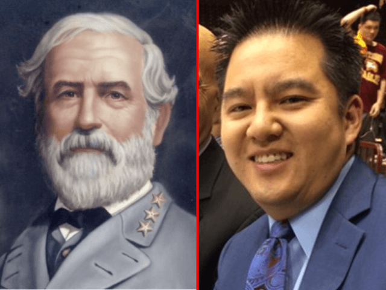

This account syndicates news from other media outlets.


ESPN pulled an Asian broadcaster named Robert Lee from a University of Virginia football game because of his name. Lee is being moved to cover a game in Pittsburgh instead.
“We collectively made the decision with Robert to switch games as the tragic events in Charlottesville were unfolding, simply because of the coincidence of his name,” ESPN officials disclosed in a statement obtained from ESPN spokesman Derek Volner. “In that moment it felt right to all parties.”

OutkickTheCoverage.com’s Clay Travis broke the story Tuesday evening. Travis wrote:
In a story that seems made for The Onion, but is actually true, according to multiple Outkick fans inside ESPN MSESPN decided to pull an Asian college football announcer named Robert Lee off the William and Mary at University of Virginia college football game because they were concerned that having an ASIAN FOOTBALL ANNOUNCER NAMED ROBERT LEE would be offensive to some viewers.
Did I mention that Robert Lee is Asian?
ESPN originally scheduled Lee to cover this weekend’s game between William and Mary College and the University of Virginia. Instead, ESPN reassigned Lee to cover the game between Youngstown State and Pittsburgh. Dave Weekley will cover the game in Virginia. “Unless someone tries to take down Dave Weekley statues between now and kickoff,” Travis wrote. “In which case ESPN will be royally fucked.”
Travis continued:
Does ESPN really believe people are this dumb or that having an Asian announcer named Robert Lee is too offensive for the average TV viewer to handle?
Yes, yes they do.
“It’s a shame that this is even a topic of conversation and we regret that who calls play-by-play for a football game has become an issue,” the ESPN statement concludes.
New: internal memo from ESPN prez John Skipper about the Robert Lee decision pic.twitter.com/3yFk4hbDRb
— Brian Stelter (@brianstelter) August 24, 2017
Read Next: General Robert E. Lee: American Hero Or Slavery Apologist?